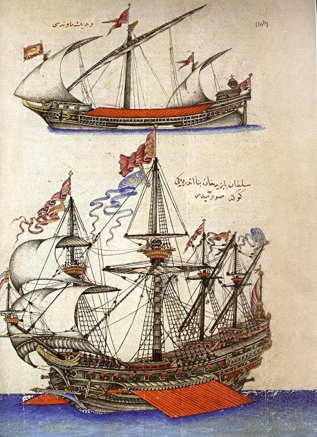
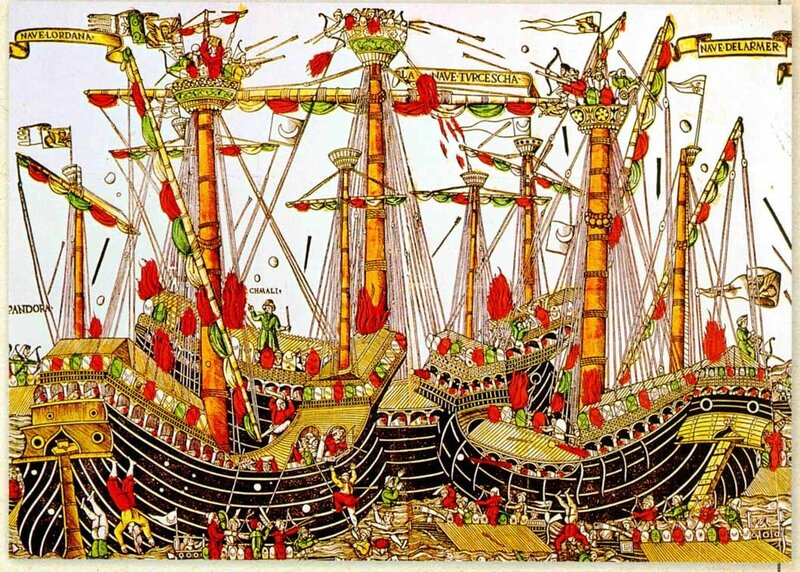

По ходу рассказа о подготовке к осаде Родоса в 1522 году в комментариях возникали вопросы о возможности снабжения большого контингента вооруженных сил империи, участвующих в осаде. Поэтому придется нам на время прервать «нарративную историю» этой осады и обратиться к более сухим, но очень необходимым вопросам логистики.
В выяснении этих вопросов нам поможет один документ, хранящийся в архиве музея дворца Топкапы (Сераля) в Стамбуле. Это доклад адмирала (капудан-паши, kapûdân) Ğa'fer Aġa от конца марта 1517 года великому визирю Юнус-паше, который в это время сопровождал султана Селима I в экспедиции по захвату Египта. Адмирал готовился к отправке эскадры в составе 100 кораблей и судов, направлявшейся в Александрию с грузом продовольствия, боеприпасов и других предметов материального обеспечения для армии султана. Это достаточно пространный документ, освещающий вопросы организации снабжения и характер отправляемых грузов. Его изложение можно найти у Jean-Louis Bacqué-Grammont в Revue de l'Occident musulman et de la Méditerranée (1985, 39 pp. 74).
Помимо этого документа будем использовать некоторые другие источники, относящиеся к данному периоду, которые помогут нам, в частности, разобраться с турецкой и итальянской морской терминологией.
Но прежде необходимо сказать несколько слов о турецком флоте той эпохи. Не зная, что собой представляли турецкие корабли того времени, трудно рассуждать об их возможностях по доставке и обеспечению осадной армии.
В ответе на один из комментариев мы уже упоминали, что боеспособный флот появился у османов к началу XVI века. Именно тогда, в 1499 году, при султане Баязиде II, во время Венециано-османской войны 1499—1503 гг. произошла знаменитая битва при Зонкьо, также известная как сражение при Сапьенце (иногда ее еще называют Первой битвой при Лепанто). Считают, что она явилась первым в истории морским сражением с использованием установленных на кораблях пушек. Турецким флотом командовал адмирал Кемаль-реис, в прошлом известный корсар, прославившийся, в частности, тем, что в 1490 и 1492 годах вывез из Испании евреев и мусульман, пожелавших переселиться в Османскую империю. Эти испанские эмигранты в дальнейшем внесли большой вклад в становление Империи, в частности, в ее кораблестроение.
В 1495 году для вновь назначенного адмирала Кемаль-реиса был построен большой флагманский корабль, известный под названием Göke , который мог нести 700 воинов и имел на борту новейшие пушки.

Такой же корабль был построен и для второго османского адмирала Бурак-реиса (в ходе сражения при Зонкьо этот корабль был взят на абордаж двумя венецианскими кораблями. Турецкий адмирал приказал поджечь своего флагмана, в результате все три корабля превратились в один пылающий костер.)

В июле 1499 года Кемаль-реис, возглавлявший отряд в составе 10 галер и 4 судов меньших размеров, соединился с основными силами османского флота и начал боевые действия против флота Венецианской республики. Всего под его командованием было 67 галер, 20 галиотов и около 200 вспомогательных судов.
Достигнув в августе 1499 года мыса Зонкьо в Ионическом море, между греческими городами Пилос (ранее Наварино) и Метони (Модон), флот под управлением Кемаль-реиса разгромил находящийся там венецианский флот из 47 галер, 17 галиотов и около 100 судов меньшего размера, которым командовал Антонио Гримани. Баязид II подарил 10 захваченных венецианских галер Кемаль-реису.
В результате этой битвы и последовавшего рейда турецкой кавалерии по Северной Италии Венецианская республика в 1503 году запросила мира с османами, став, фактически, их данником. Итальянские города-республики постепенно сошли с арены, уступив место на Средиземном море новым игрокам – Франции, Испании и Османской империи. И даже в знаменитой битве при Лепанто, в которой важнейшую роль сыграли галеры Венеции и Генуи, верховное командование флотом находилось у Габсбургов.
Опыт, который турки получили в ходе войны с Венецией, позволил им организовать на своих верфях строительство современных кораблей. Однако потребность в них не возникала в ближайшие годы, так как основные боевые действия развертывались на сухопутных театрах. Необходимость в сильном флоте вновь появилась в 1516 году, когда началась планомерная подготовка к захвату Египта, Родоса и Хиоса.
Корабли типа ķadirġa –kedirġa (отсюда недалеко, как мы знаем, до «каторги») описываются знаменитым турецким ученым Кятибом Челеби (1609-1657; кстати, из книги Челеби взята первая иллюстрация этого поста) как галеры с 25 банками, на каждом весле которых по 5-6 гребцов. Это было как правило двухмачтовое судно с латинским вооружением, отношение длины к ширине составляло, по разным данным, от 5:1 до 8:1.Кадырга может перевозить до 100 воинов со своим вооружением. Галера этого типа была оснащена одной пушкой большого калибра – бомбардой, четырьмя зарбзанами и восемью prangî.
Тяжелое носовое орудие – бомбарду – в тот период изготавливали из кованного железа, отдельные продольные элементы соединялись как клепки в бочках и стягивались горячими обручами. Самые крупные орудия имели диаметр ствола до 50-80 см и вес их был до 6-16 тонн. Стреляли они каменными ядрами весом от 150 до 700 кг. Ядра изготавливали из гранита или мрамора, для большей прочности обтягивались обручами. Для уменьшения зазора между ядром и каналом, что увеличивало меткость, а также для уменьшения истирания стенок канала ядра обшивались кожей. И хотя в Европе к началу XVI века уже отказались от таких монстров, в Турции их изготавливали еще несколько десятилетий. Существовала группа турецких кузнецов, специализировавшихся на их производстве. Параллельно развивалась технология литья пушек из бронзы, которая оказалась впоследствии лучше европейской технологии. С середины XV века стали применять также чугунные ядра.
Зарбзан (darbzen, zarbzen или zarbuzan) относился к наиболее распространенному типу орудий у османов. И хотя в переводе их название означало «сокрушающее орудие», и они широко применялись в составе осадной артиллерии, эти относительно легкие пушки использовались и в качестве полевой артиллерии, и на борту кораблей того времени. Среди них выделяли тяжелые (şâhî, шахи), средние (miyâne, миане) и легкие (küçük, кючюк) зарбзаны. Легкие зарбзаны стреляли ядрами до 300 дирхем (ок. 900 г), средние – до 1 окка (1,23 кг), тяжелые – до 2 окка (ок. 2,5 кг).
Пранги (prangî) были легким огнестрельным оружием, наподобие европейских фальконетов. Их снаряд весил не более 50 дирхем (150 г.). Их отливали в многочисленных турецких плавильнях. Поэтому, например, во время Венециано-османской войны 1499—1503 гг. это оружие составляло 72% от всех отлитых на турецких заводах орудий. (Gábor Ágoston, Guns for the sultan: military power and the weapons industry in the Ottoman Empire, Cambridge University Press, 2005, p.64)
Здесь хочу еще раз подчеркнуть, что по возможности необходимо использовать те названия орудий, которые им даны в национальных флотах. Иначе может получиться большая путаница и даже ошибочные заключения. Так, считалось, что на английских кораблях второй половины XVI века устанавливали кулеврины, хотя на самом деле там стояли их укороченные и утяжеленные версии, подобные тем, что на испанских кораблях назывались medios canones. Неправильное использование терминологии привело к тому, что в некоторых работах стали встречаться пассажи о том, что на английских кораблях стояли более длинные и легкие орудия (culverins!) по сравнению с испанскими canones.
Продолжим в следующий раз.